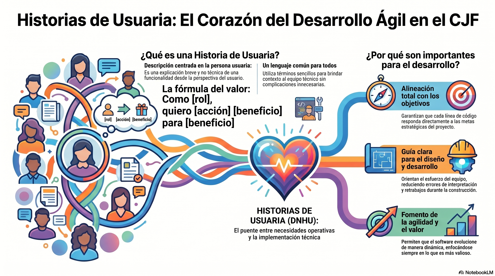

Computer Science & Software Development
"The artificial intelligence is becoming very important in a lot jobs. I´m a computer sciencist, I do development and technical documentation."
I use ChatGPT and Claude. The IA have a big impact on my daily tasks. But if we don't use it with responsability, the results could be not good.
My teacher said that IA is a tool, not a replacement. I agree.
IA allows me to analyze code and concepts I don't dominate. When I need to understand a new library, IA explains step by step.
It teaches me better technical documentation. My english is not perfect, so IA helps me understand documents in english.
Another benefit: IA helps me generate cleaner code. If I ask to refactor a function, the result is more structured. I learn while using it.
IA is powerful but we need to be careful. If a person only copy paste what the IA gives, then the work could be bad because he or she learns nothing. But if you use the IA to improve what you already know, it becomes a really good tool.
I've been redacting User Histories (technical documents). The hardest part: develop Business Rules. I have to think a lot and see the future to prevent mistakes. It's the soul of the system.
Es una explicación breve y no técnica de una funcionalidad desde la perspectiva del usuario.
Utiliza términos sencillos para brindar contexto al equipo técnico sin complicaciones innecesarias.
Below you can see the original image about User Stories in agile development.

If we combine cognitive skills with IA speed, we become better engineers. Responsible use = high quality deliverables.
No copy paste without brain. Be curious, learn every day.
Thank you — Drink beer >:D